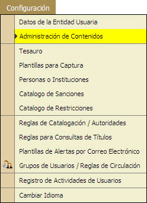

5.2. Administración de Contenidos
En esta opción el Administrador del Sistema podrá administrar los contenidos de la pagina principal del sistema, los cuales son Notas, Ligas y Eventos.
Requisisto: El usuario administrativo deberá contar con el privilegio de Administración de Contenidos.

<AGREGAR NUEVA NOTA>
- Seleccionar la Pestaña [Notas].
- Hacer "Clic" en la opción de [Agregar Nueva Nota].
- Aparecerá un cuadro de dialogo donde se escribiran los datos de necesarios para agregar una nota nueva.
- Escribir la Etiqueta para mostrar.
- Seleccionar las Fechas en las que se mantendrá activa esa Nota.
- Escribir la informacioón breve de la Nota.
- Hacer "clic" en la opción [Guardar cambios].
- El sistema mostrará un mensaje de alerta, los datos fueron creados.
<AGREGAR NUEVO EVENTO>
- Seleccionar la Pestaña [Eventos].
- Hacer "Clic" en la opción de [Agregar Nuevo Evento].
- Aparecerá un cuadro de dialogo donde se escribiran los datos de necesarios para agregar un Nuevo Evento.
- Escribir la Etiqueta para mostrar.
- Seleccionar el Tipo de Evento.
- Seleccionar las Fechas en las que se mantendrá activo el Evento.
- Selecionar el lugar del evento.
- Seleccionar las Fechas de agenda del Evento.
- Escribir el horario.
- Escribir la breve información.
- Escribir la Información mas amplia.
- Hacer "clic" en la opción [Guardar cambios].
- El sistema mostrará un mensaje de alerta, los datos fueron creados.
<AGREGAR NUEVA LIGA>
- Seleccionar la Pestaña [Ligas].
- Hacer "Clic" en la opción de [Agregar una Liga].
- Aparecerá un cuadro de dialogo donde se escribiran los datos de necesarios para agregar un Nuevo Evento.
- Escribir la Etiqueta para mostrar.
- Seleccionar las Fechas en las que se mantendrá activa la Liga.
- Escribir el vínculo o dirección de la Página de Internet.
- Hacer "clic" en la opción [Guardar cambios].
- El sistema mostrará un mensaje de alerta, los datos fueron creados.